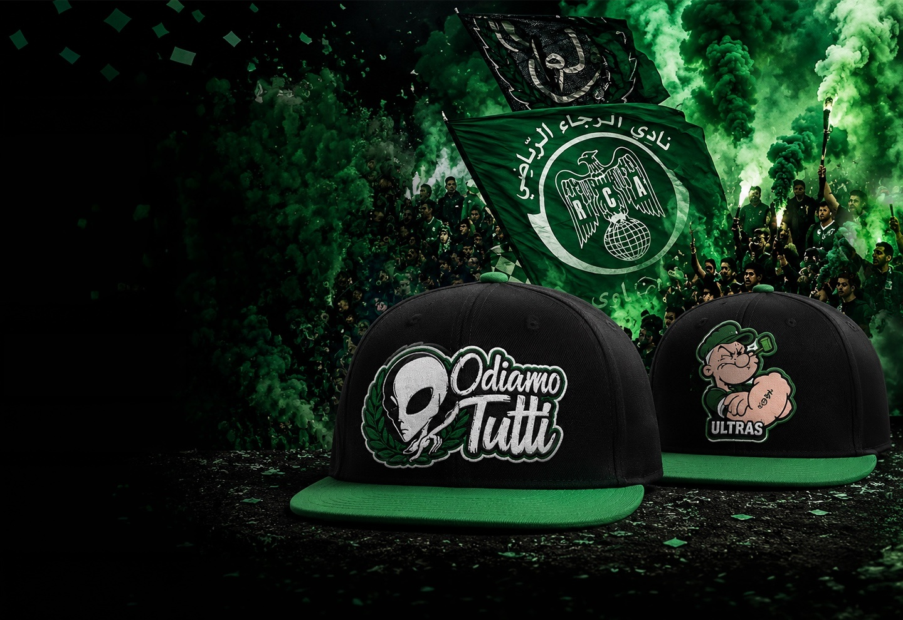
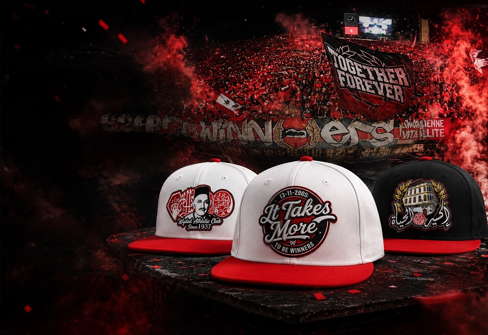

BENART
Morocco
Site de vente de casquettes et chapeaux — contenu repris selon la structure du document fourni.

1. Concept
BENART Morocco
BENART Morocco est une plateforme e-commerce spécialisée dans la conception, la personnalisation et la commercialisation de casquettes premium inspirées de l’univers du football marocain. La marque puise son inspiration dans l’histoire des clubs de la Botola Pro, la culture des supporters, les tifos, les événements marquants des saisons sportives ainsi que l’identité visuelle propre à chaque communauté de fans.
L’entreprise adopte un modèle de production en séries limitées afin de renforcer l’exclusivité de ses collections et de créer une valeur émotionnelle forte auprès des consommateurs. Chaque modèle de casquette est associé à une histoire, un événement ou un symbole représentatif de la culture footballistique marocaine.

2. Originalité de l'idée
Contrairement aux boutiques sportives traditionnelles qui commercialisent principalement des produits standardisés aux couleurs des clubs, BENART Morocco propose une approche fondée sur le storytelling, la personnalisation et l’exclusivité.
L’originalité du projet repose sur plusieurs éléments :
- Création de collections limitées inspirées de moments emblématiques du football marocain.
- Valorisation de la culture des tribunes et des supporters à travers des designs originaux.
- Personnalisation avancée des produits selon les préférences du client.
- Association de chaque collection à un récit ou à un événement marquant afin de renforcer l’engagement émotionnel des consommateurs.
- Positionnement à mi-chemin entre le merchandising sportif, la mode urbaine et les objets de collection.
3. Aspect novateur
Innovation produit
BENART Morocco introduit un concept de casquettes premium inspirées de l’actualité sportive nationale et de l’univers des supporters marocains.
Les principales innovations produits sont :
- Collections inspirées des événements marquants des clubs et des groupes de supporters.
- Éditions limitées et numérotées afin de renforcer la rareté des produits.
- Collections saisonnières renouvelées selon l’actualité de la Botola Pro.
- Personnalisation des modèles selon les préférences des clients.
Innovation digitale
L’innovation numérique constitue un élément central du projet.
Les principales fonctionnalités innovantes envisagées sont :
- Système de recommandation basé sur l’intelligence artificielle permettant de suggérer des produits adaptés aux préférences de chaque utilisateur.
- Module d’essayage virtuel en réalité augmentée permettant aux clients de visualiser les casquettes avant achat.
- Outil de personnalisation assisté par intelligence artificielle permettant de générer des designs uniques à partir des préférences et inspirations fournies par l’utilisateur.
- Analyse des comportements d’achat afin d’améliorer continuellement l’expérience utilisateur et les recommandations produits.
4. Benchmark
4.1 Concurrents directs nationaux
| Concurrent | Activité principale | Produits principaux | Positionnement |
|---|---|---|---|
| HODHOD Concept | Marque marocaine spécialisée dans les casquettes | Casquettes, chapeaux, bonnets | Lifestyle premium marocain |
| Capslab Maroc | Distributeur de casquettes sous licences officielles | Casquettes premium collectors | Casquettes premium et licences |
4.2 Concurrents indirects nationaux
| Concurrent | Activité principale | Produits principaux | Positionnement |
|---|---|---|---|
| Raja Shop | Boutique officielle du Raja Club Athletic | Maillots, casquettes, accessoires | Merchandising officiel football |
| Wydad Shop | Boutique officielle du Wydad Athletic Club | Maillots, casquettes, accessoires | Merchandising officiel football |
| FRMF Store | Boutique officielle de la Fédération Royale Marocaine de Football | Produits dérivés de l'équipe nationale | Merchandising sportif national |
4.3 Concurrents directs internationaux
| Concurrent | Pays | Produits principaux | Positionnement |
|---|---|---|---|
| New Era | États-Unis | Casquettes sportives sous licences officielles | Leader mondial de la casquette sportive |
| Mitchell & Ness | États-Unis | Casquettes et collections rétro sportives | Casquettes premium heritage |
4.4 Concurrents indirects internationaux
| Concurrent | Pays | Produits principaux | Positionnement |
|---|---|---|---|
| Nike | États-Unis | Équipements sportifs et casquettes | Leader mondial du sport |
| Adidas | Allemagne | Produits football et lifestyle | Équipementier sportif international |
| Puma | Allemagne | Produits sportifs et mode | Sport et lifestyle |
| Under Armour | États-Unis | Équipements et accessoires sportifs | Performance sportive |
5. Analyse SWOT des concurrents
HODHOD Concept
| Forces | Faiblesses | Opportunités | Menaces |
|---|---|---|---|
| Spécialiste marocain des casquettes | Pas de lien avec le football | Croissance du marché lifestyle au Maroc | Arrivée de marques internationales |
| Identité de marque locale forte | Absence de storytelling sportif | Développement du e-commerce marocain | Concurrence accrue sur la mode urbaine |
| Catalogue varié (casquettes, chapeaux) | Peu de différenciation émotionnelle | Export potentiel | Évolution rapide des tendances |
| Prix accessibles | Pas de collections événementielles | Expansion vers le premium | Produits importés moins chers |
Capslab Maroc
| Forces | Faiblesses | Opportunités | Menaces |
|---|---|---|---|
| Produits premium sous licences | Dépendance aux licences | Croissance du marché collector | Coût élevé des licences |
| Forte identité visuelle | Prix élevés | Expansion internationale | Concurrence New Era |
| Positionnement collectionneur | Peu ancré localement | Développement du merchandising sportif | Contrefaçon |
| Design créatif | Peu de personnalisation | Nouveaux partenariats sportifs | Saturation du marché |
Raja Shop
| Forces | Faiblesses | Opportunités | Menaces |
|---|---|---|---|
| Marque officielle du club | Produits standardisés | Développement e-commerce sportif | Contrefaçon |
| Forte communauté de supporters | Peu d’innovation produit | Croissance des fans digitaux | Concurrence des marques alternatives |
| Légitimité institutionnelle | Faible storytelling produit | Merchandising international | Saturation du marché local |
| Produits authentiques | Peu de casquettes premium | Expansion merchandising lifestyle | Perte d’engagement jeune public |
Wydad Shop
| Forces | Faiblesses | Opportunités | Menaces |
|---|---|---|---|
| Marque officielle du club | Offre limitée en produits lifestyle | Développement du fan commerce | Produits non officiels |
| Forte notoriété nationale | Peu de personnalisation | Croissance du digital | Concurrence internationale |
| Communauté très engagée | Design peu innovant | Nouveaux produits collectors | Évolution des tendances |
| Produits certifiés | Expérience e-commerce classique | Merchandising premium | Désengagement génération Z |
FRMF Store
| Forces | Faiblesses | Opportunités | Menaces |
|---|---|---|---|
| Soutien institutionnel fort | Offre limitée à l’équipe nationale | Coupe du Monde 2030 | Concurrence des marques privées |
| Produits officiels | Peu de produits lifestyle | Développement du merchandising global | Fluctuation des performances sportives |
| Visibilité médiatique | Faible innovation digitale | Expansion internationale | Saturation du marché |
| Distribution officielle | Peu de storytelling | Croissance des fans digitaux | Évolution des attentes consommateurs |
New Era
| Forces | Faiblesses | Opportunités | Menaces |
|---|---|---|---|
| Leader mondial des casquettes | Prix élevés | Expansion mondiale du sport | Contrefaçon massive |
| Licences officielles fortes | Peu adapté aux marchés locaux | Croissance du merchandising digital | Concurrence émergente niche |
| Image de marque très forte | Production standardisée | Nouvelles collaborations sportives | Marques alternatives spécialisées |
| Large distribution internationale | Peu de personnalisation poussée | Marché du streetwear en croissance | Saturation du marché global |
Mitchell & Ness
| Forces | Faiblesses | Opportunités | Menaces |
|---|---|---|---|
| Spécialiste du vintage sportif | Positionnement très niche | Retour du vintage dans la mode | Concurrence des marques modernes |
| Forte valeur émotionnelle | Prix élevés | Croissance du marché collector | Évolution rapide des tendances |
| Collections historiques | Catalogue limité | Expansion internationale | Copie des designs |
| Image premium | Peu d’innovation digitale | Collaborations sport/lifestyle | Dépendance aux licences |
Nike / Adidas / Puma / Under Armour (groupe)
| Forces | Faiblesses | Opportunités | Menaces |
|---|---|---|---|
| Marques mondiales | Pas spécialisées casquettes | Croissance du sportwear | Concurrence spécialisée |
| Distribution massive | Produits standardisés | Développement lifestyle | Marques niche plus agiles |
| Innovation forte | Peu de storytelling local | Expansion e-commerce | Saturation du marché |
| Image premium | Faible personnalisation | Marché africain en croissance | Perte de jeunes consommateurs |
Conclusion
BENART se positionne dans une zone encore peu occupée :
- Plus premium et storytelling que les boutiques de clubs
- Plus émotionnel que les équipementiers sportifs
- Plus spécialisé football marocain que les marques lifestyle
- Plus innovant (IA + personnalisation + collections limitées)
6. Analyse des fonctionnalités des sites web des concurrents
6.1 Analyse fonctionnelle détaillée
| Fonctionnalité | HODHOD | Raja Shop | Wydad Shop | FRMF Store | New Era | Mitchell & Ness | Capslab | BENART |
|---|---|---|---|---|---|---|---|---|
| Catalogue produits structuré | ✓ | site suspendu | ✓ | ✓ | ✓ | ✓ | ✓ | ✓ |
| Fiches produits détaillées | ✓ | ✗ | ✓ | ✓ | ✓ | ✓ | ✓ | ✓ |
| Galerie images produit | ✓ | ✗ | ✓ | ✓ | ✓ | ✓ | ✓ | ✓ |
| Panier d'achat | ✓ | ✗ | ✗ | ✓ | ✓ | ✓ | ✓ | ✓ |
| Compte client | ✓ | ✗ | ✗ | ✓ | ✓ | ✓ | ✓ | ✓ |
| Paiement en ligne | ✗ | ✗ | ✗ | ✓ | ✓ | ✓ | ✓ | ✓ |
| Paiement à la livraison | ✓ | ✗ | ✗, point de vente | ✗ | ✗ | ✗ | ✗ | ✓ |
| Suivi de commande | ✗ | ✗ | ✓ | ✓ | ✓ | ✓ | ✓ | |
| Recherche interne | ✓ | ✗ | ✓ | ✓ | ✓ | ✓ | ✓ | ✓ |
| Filtrage produits | ✓ | ✗ | ✗ | ✓ | ✓ | ✓ | ✓ | ✓ |
| Wishlist / favoris | ✗ | ✗ | ✗ | - | ✓ | ✓ | ✓ | ✓ |
| Newsletter | ✓ | ✗ | ✗ | ✗ | ✓ | ✓ | ✓ | ✓ |
| Blog / contenu éditorial | ✗ | ✗ | ✗ | ✗ | ✓ | ✓ | ✗ | ✓ |
| Avis clients | ✗ | ✗ | ✗ | ✗ | ✓ | ✓ | ✓ | ✓ |
| Collections limitées | ✗ | ✗ | ✗ | ✗ | ✓ | ✓ | ✓ | ✓ |
| Storytelling produit | ✗ | ✗ | ✗ | ✓ | ✓ | ✓ | ✓ | ✓✓ |
| Personnalisation produit | ✗ | ✗ | ✗ | ✗ | ✗ | ✗ | ✗ | ✓ |
| Recommandation IA | ✗ | ✗ | ✗ | ✗ | ✗ | ✗ | ✗ | ✓ |
| Génération design IA | ✗ | ✗ | ✗ | ✗ | ✗ | ✗ | ✗ | ✓ |
| Essayage virtuel (AR) | ✗ | ✗ | ✗ | ✗ | ✗ | ✗ | ✗ | ✓ |
| Mobile responsive | ✓ | ✗ | ✓ | ✓ | ✓ | ✓ | ✓ | ✓ |
| UX orientée storytelling | ✗ | ✗ | ✗ | - | ✓ | ✓ | ✗ | ✓ |
7. Faisabilité industrielle du projet
Modèle industriel retenu
BENART adoptera un modèle OEM (Original Equipment Manufacturer). L'entreprise se concentrera sur la conception des collections, le design graphique, le marketing digital et la commercialisation, tandis que la fabrication des casquettes sera confiée à un partenaire industriel spécialisé.
Le fournisseur OEM prendra en charge l'ensemble du processus de production selon les spécifications fournies par BENART :
| Élément personnalisé | Description |
|---|---|
| Forme de la casquette | Snapback, Trucker, Dad Cap, Baseball Cap, etc. |
| Matière textile | Coton, polyester, coton premium, matières recyclées |
| Couleurs | Personnalisation complète selon les collections |
| Broderies | Logos, textes, symboles et illustrations |
| Étiquettes tissées | Branding BENART |
| Étiquettes d'entretien | Conformité réglementaire |
| Packaging | Boîtes, stickers et emballages personnalisés |
Cette approche permet d'obtenir des produits exclusifs tout en évitant les investissements lourds dans des équipements industriels.
Normes de qualité à respecter
| Norme | Description |
|---|---|
| ISO 9001 | Management de la qualité |
| OEKO-TEX Standard 100 | Sécurité des textiles |
| REACH (Union Européenne) | Contrôle des substances chimiques |
| Règlement UE 1007/2011 | Étiquetage des fibres textiles |
| Normes IMANOR | Conformité au marché marocain |
Fournisseurs potentiels (modèle OEM BENART – sélection optimisée)
| Pays | Fournisseur / Type | Spécialité | Avantages | Inconvénients |
|---|---|---|---|---|
| Maroc | Ateliers de confection textile & broderie (Casablanca, Tanger, Kénitra) | Broderie 2D/3D, assemblage de casquettes, petites séries | Proximité, communication facile, contrôle qualité direct, délais très courts | Expertise limitée sur casquettes premium structurées, capacité industrielle faible |
| Turquie | Fabricants OEM spécialisés textile & headwear | Casquettes premium, production OEM complète | Excellent rapport qualité/prix, bonne qualité textile, MOQ moyens, flexibilité élevée | Coût logistique international, dépendance aux importations |
| Chine | Usines OEM/ODM spécialisées casquettes (Alibaba / fabricants directs) | Production complète + packaging + personnalisation | Prix très compétitifs, forte capacité de production, personnalisation totale, scalabilité élevée | Délais longs, contrôle qualité à distance, MOQ élevés |
Conclusion
Le choix des fournisseurs pour BENART repose sur une logique de compromis entre coût, qualité et flexibilité industrielle :
- Le Maroc est adapté aux tests de marché et aux petites séries grâce à sa proximité et sa flexibilité.
- La Turquie constitue le meilleur équilibre global pour la production régulière de collections premium.
- La Chine permet une industrialisation à grande échelle avec des coûts unitaires très compétitifs.
BENART adopte une stratégie de sourcing multi-pays combinant le Maroc, la Turquie et la Chine afin d’optimiser ses coûts de production, garantir la qualité des produits et assurer une montée en puissance progressive de ses volumes de production.
8. Faisabilité technique du projet BENART
1. Prérequis techniques (équipe nécessaire)
La réalisation de BENART nécessite une équipe multidisciplinaire couvrant la création produit, la production, marketing digital et la construction de marque et commercialisation.
A. Équipe création produit & production
| Profil | Rôle |
|---|---|
| Designer produit / Directeur artistique | Création de l’identité visuelle des collections, concepts des casquettes, logos, motifs et direction artistique |
| Designer graphique | Création des visuels, broderies, patchs, éléments graphiques et supports marketing |
| Responsable production textile | Gestion de la fabrication, choix des matières, suivi des fournisseurs et organisation de la production |
| Opérateur machines textiles | Utilisation des machines de broderie, couture et personnalisation |
| Responsable contrôle qualité | Vérification des finitions, conformité des produits et qualité finale |
| Responsable approvisionnement | Gestion des fournisseurs, matières premières et stocks |
B. Équipe communication digitale & branding
Cette équipe est essentielle pour transformer BENART en marque culturelle autour du football marocain grâce au storytelling et à une identité forte.
| Profil | Rôle |
|---|---|
| Brand Manager | Définition de la stratégie de marque, positionnement, valeurs et cohérence de l’identité BENART |
| Content Creator / Créateur de contenu | Production de photos, vidéos, reels, interviews, contenus lifestyle et contenus liés à la culture supporters |
| Photographe / Vidéaste | Création de contenus visuels professionnels : shootings produits, campagnes publicitaires, vidéos storytelling |
| Copywriter / Storyteller | Rédaction des histoires derrière les collections, descriptions produits, campagnes et publications |
| Community Manager | Gestion des réseaux sociaux, interaction avec la communauté et animation des plateformes digitales |
| Social Media Manager | Planification des campagnes digitales, stratégie de contenu et développement de l’audience |
| Relation publique | Prise en contact avec les parties prenantes externe, clubs, ultras, media… |
| Influence & Partnership Manager | Collaboration avec supporters, créateurs de contenu football, influenceurs et communautés sportives |
C. Équipe digitale et e-commerce
| Profil | Rôle |
|---|---|
| Développeur web Full-Stack | Création et maintenance du site e-commerce |
| Designer UI/UX | Conception d’une expérience utilisateur moderne inspirée des marques streetwear |
| Responsable e-commerce | Gestion du catalogue, commandes, stocks et expérience client |
| Spécialiste SEO / Marketing digital | Optimisation de la visibilité en ligne et acquisition de clients |
D. Organisation recommandée au lancement
Pour limiter les coûts, certains rôles peuvent être regroupés :
| Poste initial | Missions regroupées |
|---|---|
| Directeur artistique | Design produit + identité visuelle + direction des campagnes |
| Content Creator polyvalent | Photo + vidéo + réseaux sociaux |
| Community Manager | Animation communauté + gestion quotidienne |
| Responsable production | Fournisseurs + qualité + logistique |
| Développeur freelance | Création et maintenance du site |
2. Prérequis technologiques
| Catégorie | Éléments nécessaires |
|---|---|
| Prérequis technologiques | Plateforme e-commerce (Shopify, WooCommerce ou PrestaShop), CRM, gestion des stocks, passerelles de paiement, Google Analytics, Google Search Console, Meta Business Suite, outils d'email marketing, certificat SSL, hébergement sécurisé, sauvegardes automatiques, pare-feu et protection des données |
| Outils IA | ChatGPT (création de contenu, service client, brainstorming), outils de génération d'images IA (Midjourney, Adobe Firefly), chatbot IA, outils d'analyse marketing et de personnalisation client |
| Logiciels de design | Adobe Illustrator, Adobe Photoshop, Figma, logiciels de conception de broderie (Wilcom EmbroideryStudio, Hatch Embroidery) |
| Matériel informatique | Ordinateurs portables ou postes de travail, écrans professionnels, tablettes graphiques (optionnel), disques de sauvegarde, connexion internet haut débit |
| Matériel de production | Machine à broder industrielle, machine à coudre industrielle, presse à chaud, machine de découpe textile, machine de pose d'œillets, machine de pose de boutons, équipements de finition et de contrôle qualité |
| Matières premières | Tissus (coton, polyester, mesh), fils de broderie, visières, fermetures snapback, patchs, étiquettes tissées, emballages et boîtes d'expédition |
| Matériel de création de contenu | Appareil photo professionnel, caméra ou smartphone haut de gamme, objectifs photo, trépied, stabilisateur (gimbal), microphones, éclairage LED, fonds studio |
| Production de contenu digital | Station de montage vidéo, logiciels de montage (Premiere Pro, DaVinci Resolve, CapCut) |
| Infrastructure logistique | Local de stockage, rayonnages, tables de préparation des commandes, imprimante d'étiquettes, matériel d'emballage |
| Infrastructure serveur | Hébergement cloud, serveur web, base de données, système de sauvegarde, stockage des médias, CDN pour optimiser les performances du site |
Pourquoi cette équipe et les outils sont indispensables pour BENART ?
Contrairement à une simple marque de vêtements, BENART repose sur :
- un storytelling autour du football marocain ;
- une identité visuelle forte ;
- la création d’une communauté de supporters ;
- des campagnes émotionnelles autour des clubs, derbys et moments historiques.
L’objectif est de créer une relation culturelle avec le client, similaire aux marques streetwear qui vendent une appartenance et une histoire, pas uniquement un produit.
9. Étude financière du projet BENART (version lancement)
1. Budgétisation du projet en jours-homme (JH)
| Ressource humaine | Mission | Estimation (JH) | Coût estimatif (MAD/JH) | Budget estimatif (MAD) |
|---|---|---|---|---|
| Chef de projet / Business manager | Pilotage du projet, coordination, stratégie | 40 JH | 400 | 16 000 |
| Designer produit / Directeur artistique | Création identité visuelle, designs casquettes, collections | 30 JH | 450 | 13 500 |
| Designer graphique | Création logos, visuels, broderies, supports marketing | 25 JH | 350 | 8 750 |
| Développeur web Full-Stack | Création plateforme e-commerce | 45 JH | 600 | 27 000 |
| Designer UI/UX | Maquettes du site et expérience utilisateur | 15 JH | 450 | 6 750 |
| Créateur de contenu (photo/vidéo) | Shooting produits, vidéos storytelling, réseaux sociaux | 30 JH | 400 | 12 000 |
| Community manager / Social media manager | Gestion réseaux sociaux et stratégie digitale | 25 JH | 300 | 7 500 |
| Copywriter / Storyteller | Rédaction histoires collections, campagnes, contenus | 15 JH | 300 | 4 500 |
| Responsable production | Fournisseurs, fabrication, contrôle qualité | 20 JH | 400 | 8 000 |
| Total estimatif | 245 JH | 104 000 MAD | ||
2. Budgétisation logistique
| Poste | Description | Budget estimatif (MAD) |
|---|---|---|
| Achat marchandises / matières premières | Première production de casquettes, tissus, accessoires | 50 000 |
| Prototypes et échantillons | Création et validation des premiers modèles | 10 000 |
| Packaging | Boîtes, sacs, étiquettes, stickers | 15 000 |
| Stockage | Location espace stockage et organisation | 12 000 |
| Livraison | Transport, expédition et retours | 10 000 |
| Matériel préparation commandes | Étiquetage et consommables | 5 000 |
| Production de contenu | Shooting, décors et supports visuels | 15 000 |
| Marketing lancement | Publicité digitale, influence, campagnes | 25 000 |
| Outils numériques | Hébergement, IA, logiciels | 10 000 |
| Total logistique estimatif | 152 000 MAD | |
RECAP du budget initial BENART
| Catégorie | Budget estimatif |
|---|---|
| Ressources humaines (245 JH) | 104 000 MAD |
| Logistique et lancement | 152 000 MAD |
| Budget total estimé | ≈ 256 000 MAD |
10. Stratégie de communication BENART
La stratégie de communication de BENART repose sur la construction d’une identité de marque forte autour du football marocain, du streetwear et du storytelling. L’objectif n’est pas seulement de vendre des casquettes, mais de créer une communauté engagée autour de la culture footballistique.
| Axe de communication | Actions prévues |
|---|---|
| Partenariats publicitaires | Collaboration avec des créateurs de contenu football, influenceurs marocains, pages spécialisées dans le football national, communautés de supporters et médias sportifs digitaux. Mise en place de partenariats avec des clubs de la BOTOLA PRO , associations sportives et événements footballistiques pour augmenter la visibilité de la marque. |
| Ambassadeurs de marque | Sélection de profils proches de l’univers BENART : supporters, anciens joueurs, créateurs de contenu football, artistes streetwear. Leur rôle est de représenter la marque et de renforcer sa crédibilité auprès de la communauté. |
| Création de contenus réseaux sociaux | Développement d’une stratégie de contenu basée sur le storytelling : histoire derrière chaque collection, inspiration des derbys, culture ultras, moments historiques du football marocain. Publication de photos produits premium, vidéos courtes (Reels/TikTok), making-of, interviews et contenus communautaires. |
| Plateformes principales | Instagram pour l’image de marque et les collections, TikTok pour la viralité et les contenus courts, YouTube pour les formats longs (documentaires, storytelling), Facebook pour toucher une audience plus large. |
| Campagnes publicitaires digitales | Utilisation de campagnes sponsorisées sur les réseaux sociaux afin de cibler les supporters de football, amateurs de streetwear et jeunes consommateurs marocains. Mise en avant des drops limités et des éditions exclusives pour créer un sentiment d’urgence. |
| SEO et GEO (Generative Engine Optimization) | Optimisation de la présence digitale de BENART afin d’être visible dans les moteurs de recherche classiques et les moteurs de recherche basés sur l’IA. Création de contenus optimisés : articles sur la culture football marocaine, histoires des clubs, pages dédiées aux collections, descriptions produits détaillées et contenus susceptibles d’être recommandés par les assistants IA. |
| Marketing communautaire | Création d’une communauté autour de BENART : concours, votes pour les prochains designs, participation des supporters à la création des collections, campagnes avec hashtags et contenus générés par les utilisateurs (UGC). |
| Email marketing et fidélisation | Mise en place d’une base clients avec newsletters, annonces des nouveaux drops, accès anticipé aux éditions limitées et offres personnalisées. |
| Événements physiques | Participation à des événements sportifs, pop-up stores temporaires, collaborations avec des espaces liés au football et organisation de lancements de collections pour créer une expérience de marque. |
Objectif de la stratégie :
| Objectif | Moyen utilisé |
|---|---|
| Construire la notoriété | Influence, publicité digitale, partenariats |
| Créer une communauté | Réseaux sociaux, contenus participatifs, storytelling |
| Générer des ventes | E-commerce, drops limités, campagnes ciblées |
| Renforcer la visibilité future | SEO + GEO (IA), contenus éducatifs et narratifs |
11. Limites / contraintes à la création et à l’implémentation du projet BENART
La création de BENART présente plusieurs contraintes liées à la construction d’une nouvelle marque, à la maîtrise des compétences nécessaires, à l’adaptation d’un concept international au contexte marocain et aux ressources financières et industrielles nécessaires à son développement.
| Limites / Contraintes | Description |
|---|---|
| Manque de connaissance du domaine (littératie métier) | Le projet nécessite une maîtrise de plusieurs domaines : industrie textile, fabrication des casquettes, gestion d’une marque streetwear, culture footballistique et fonctionnement des communautés de supporters. Une phase d’apprentissage et d’acquisition d’expertise sera nécessaire pour comprendre l’ensemble de la chaîne de valeur. |
| Littératie numérique | Le développement d’une marque digitale nécessite des compétences en e-commerce, marketing digital, référencement SEO/GEO, analyse des données, gestion des réseaux sociaux et utilisation des outils d’intelligence artificielle. Le manque de compétences dans ces domaines peut nécessiter le recours à des experts ou des formations spécifiques. |
| Adaptation d’une culture étrangère au contexte marocain | BENART s’inspire d’un modèle développé principalement aux États-Unis autour de la culture des casquettes, du sport et du streetwear. Le défi consiste à adapter cette culture au contexte marocain en créant une identité propre basée sur l’histoire des clubs, les derbys, les stades et la culture des supporters, sans reproduire simplement un modèle étranger. |
| Construction du storytelling et de l’identité de marque | La réussite de BENART dépend de sa capacité à créer un univers narratif fort autour de chaque collection. Cela nécessite un travail important de recherche, de création de contenu, de documentation historique et de développement d’une communauté engagée. |
| Collaboration avec les clubs de la Botola Pro | La création de collections inspirées des clubs professionnels marocains peut nécessiter des partenariats officiels. L’obtention des autorisations liées aux logos, aux symboles et aux droits commerciaux peut représenter une difficulté en raison des négociations nécessaires avec les clubs. |
| Collaboration avec les groupes ultras | Les groupes ultras représentent une source importante d’inspiration pour BENART, mais leur intégration nécessite une approche authentique et respectueuse. La marque devra construire une relation de confiance avec ces communautés afin d’éviter une perception de récupération commerciale de leur culture. |
| Financement initial du projet | Le lancement de BENART nécessite un investissement important pour financer la production initiale, le développement de la plateforme e-commerce, la création de contenu, le marketing digital, le stockage et la logistique. La recherche de financement peut constituer une limite au développement rapide du projet. |
| Coût de production locale élevé | La fabrication locale des casquettes peut être plus coûteuse que l’importation depuis des pays disposant d’une industrie textile plus développée comme la Chine ou la Turquie. Les coûts liés aux matières premières, aux capacités de production et aux économies d’échelle peuvent réduire les marges et limiter la compétitivité des prix. |
| Compromis entre production locale et compétitivité | BENART devra trouver un équilibre entre la valorisation du « Made in Morocco » et la nécessité de proposer un prix adapté au marché. Une stratégie hybride pourrait être envisagée : externalisation de certaines étapes de fabrication tout en conservant localement la conception, la personnalisation, le contrôle qualité et le branding. |
| Production et approvisionnement | Trouver des fournisseurs fiables capables de garantir une qualité constante, des délais raisonnables et des volumes adaptés au lancement peut représenter une difficulté, notamment pour une jeune marque avec un pouvoir de négociation limité. |
| Création d’une communauté autour de la marque | BENART ne vend pas uniquement des casquettes mais une identité culturelle. Construire une communauté fidèle autour du football marocain, du storytelling et du sentiment d’appartenance nécessite du temps, une communication régulière et une forte présence digitale. |
| Concurrence internationale | BENART devra se différencier face à des marques internationales déjà établies dans l’univers des casquettes et du streetwear, disposant d’une forte notoriété, d’une capacité de production importante et d’une communauté mondiale. |
RECAP des limites
| Domaine | Contrainte principale |
|---|---|
| Compétences | Acquisition des connaissances nécessaires dans le textile, le digital, le branding et le storytelling. |
| Culture & identité | Adapter une culture internationale de la casquette et du streetwear à la culture du supporter marocain. |
| Partenariats | Difficulté d’accès aux collaborations avec les clubs de la Botola Pro et les communautés ultras. |
| Finance | Besoin d’un capital initial pour financer la production, le marketing et le développement de la marque. |
| Production | Coût de fabrication locale supérieur aux produits importés de Chine ou de Turquie, nécessitant une optimisation de la chaîne de production. |
| Communication | Création d’une communauté et d’un storytelling capable de différencier BENART sur le marché. |
Conclusion :
La principale difficulté de BENART ne réside pas uniquement dans la fabrication des casquettes, mais dans la capacité à construire une marque culturelle marocaine forte et crédible. Le véritable défi sera de transformer une inspiration internationale en un concept adapté au contexte local, capable de réunir supporters, amateurs de football et passionnés de streetwear autour d’une identité commune.